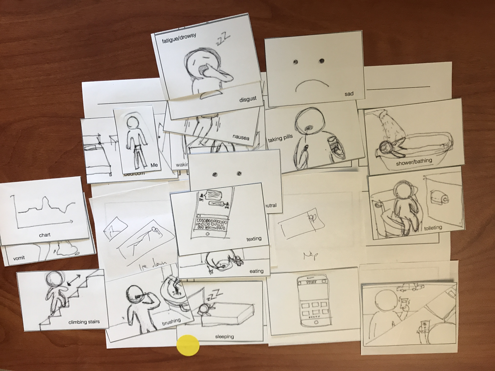
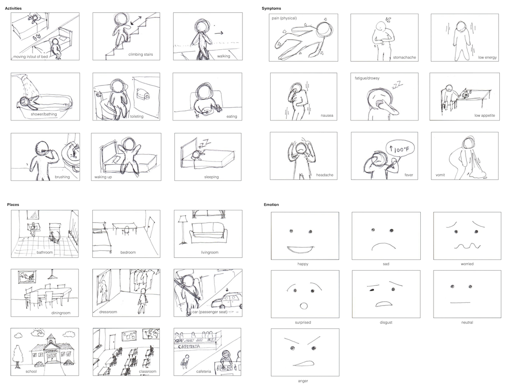
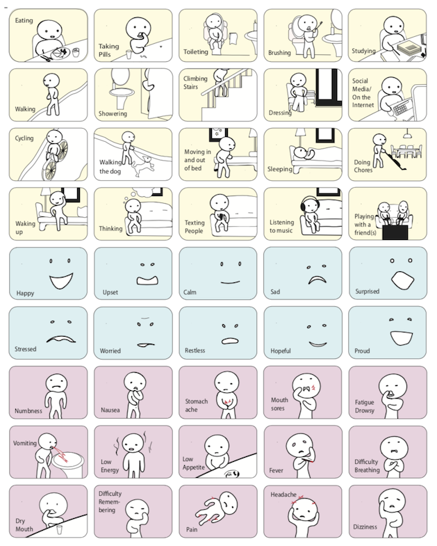
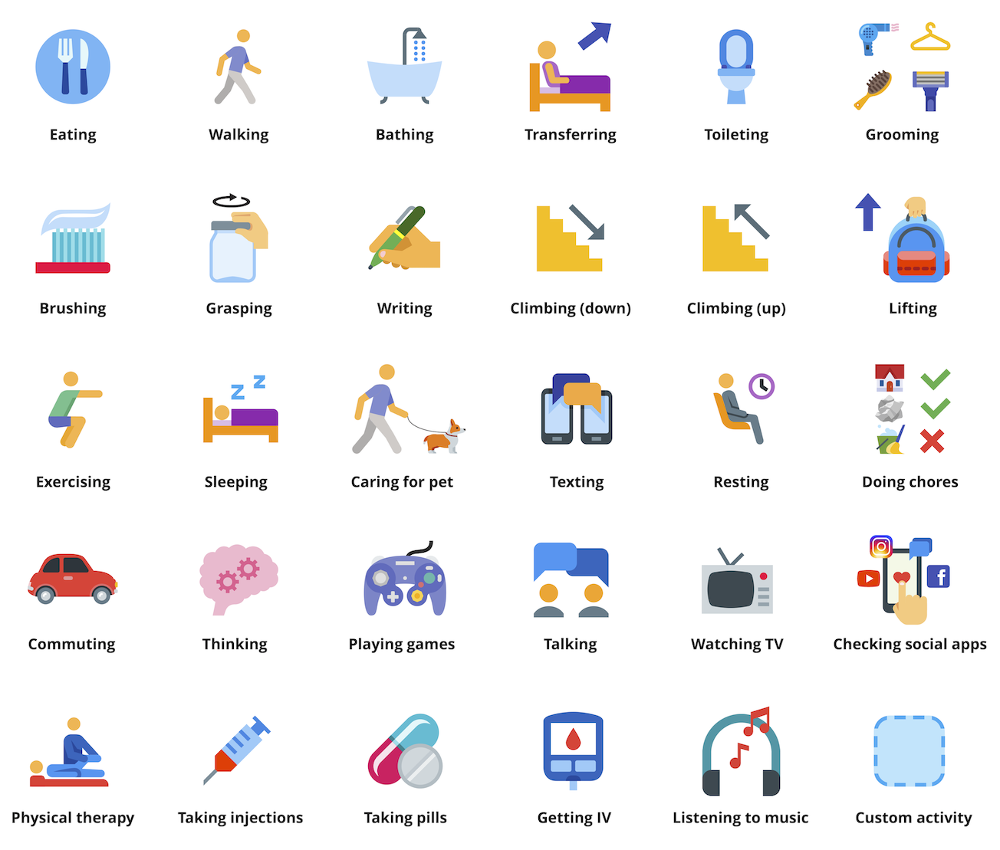
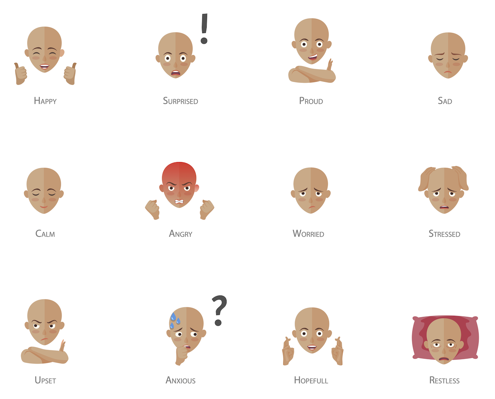
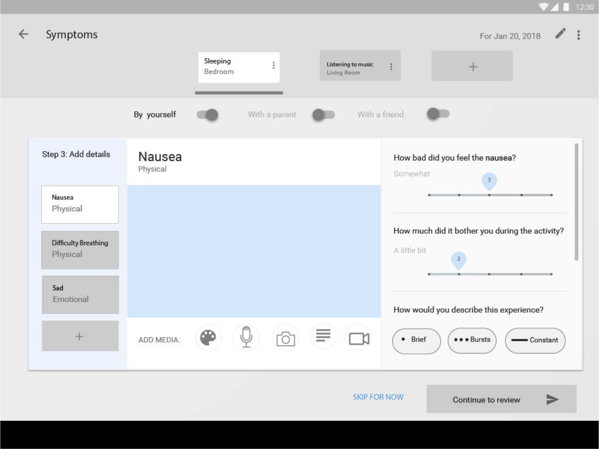
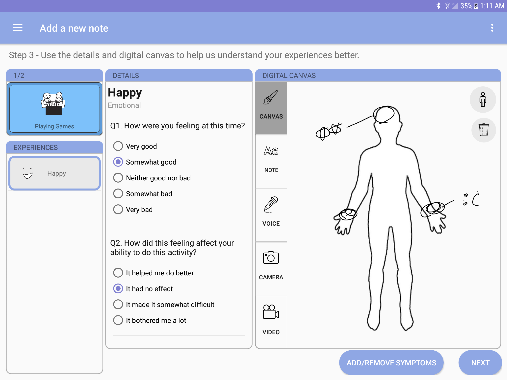
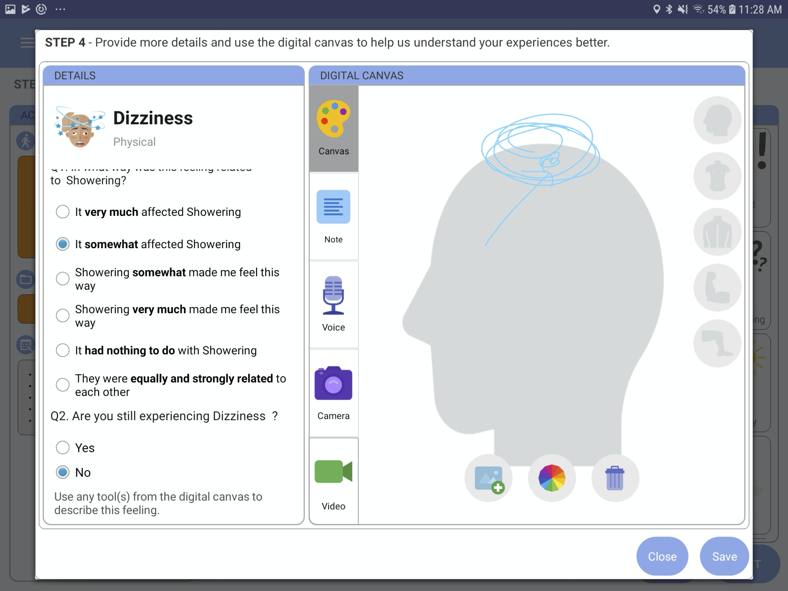

CO-OP: mHealth Tools for Tracking Everyday Illness Experiences

The past decade has witnessed unprecedented advances in mobile sensor technologies to support continuous passive sensing as well as active sensing (in which the human initiates self-reported observations). However, these applications are designed and intended for use by a single person, who is either collecting personal data about themself or a care recipient. This research explores the design of mobile technologies to support multiple individuals who are collaboratively collecting, reconciliating, and consolidating personal data on a single person.
- Project Date: Sep 2018 - Present
- Affiliations: Georgia Institute of Technology, Children's Healthcare of Atlanta, Emory University Hospital
- Funding: NSF #1652302
- Collaborators: Jungwook Park, Kimberly Do, Rosa Arriaga, Sampath Prahalad, Thomas Olson and Lauren Wilcox
Background
During complex treatment regimens such as chemotherapy, adolescent patients must self-report their observations of symptoms and treatment side effects for their care team to inform decisions about ongoing treatment. This communication is challenging because patients, parents and clinicians have unmatched experiences, conceptions and linguistic representations of indicators of health. Yet patients' overt reliance on parental caregivers to manage and communicate their illness experience could only result in a quality of care that is based on an approximation of their actual health status.
Goal
The goal of this research is to understand how to accommodate both patient and caregiver’s observational accounts of the illness and support their collaborative construction of patient illness narratives.
Methods
- Co-design with 13 families
- Diary probe with 12 families
- Semi-structured interviews
- Mobile ecological momentary assessment (mEMA)
Co-design is a powerful design method that democratizes the design process by directly involving the intended users as co-partners to envision and conceive of a technology design through multiple design activities. Through co-design, I was able to characterize the language of patient illness narratives that matter for the adolescent population.
{kind=link}

Through storyboard-based co-design with patient families, I found the right set of building blocks to help young patients reconstruct various aspects of their daily living

In a 2 week diary study, I further explored how to support patients and parents to play a direct role as designers in crafting representations of the patient's illness experiences.
Key Findings
Patients overall reported that their daily life consists of routine activities, yet irregular symptoms. While patients attended to personally-felt symptoms, parents were better at capturing contextual details (e.g., location, timing) and activities around the illness experience. Patients were able to develop better symptom literacy in the act of tracking (with illustrations), and coordinate the exchange of sensitive symptoms with their parents outside of the typical context of face-to-face communication.
Co-design and diary studies allowed me to identify three important strategies to support patient narratives of their daily experiences during treatment: to allow full expression of how symptoms affect patients’ daily activities, use of various media data representations (e.g., photo, drawing), and support distinct roles for family caregivers to contribute their unique observations of the patient experience.
In sum, we can scaffold patients’ participation in care by augmenting patient-generated data in ways that 1) tailor the representation of illness experience to match the patient’s cognitive and linguistic needs, 2) incorporate caregiver observations, and 3) provide rich means to elaborate on their illness experience in the context of everyday life.
Design Process
Pictograms
{kind=link}

{kind=link}

{kind=link}

{kind=link}

The design of pictographic representations of activities and physical and emotional experiences evolved over the course of two years since the beginning of this project. I started from hand-drawn paper sketches, computer-generated illustrations, and finalized the designs with pixel-perfect vector renderings.
User Interface
{kind=link}

{kind=link}

{kind=link}

Prototype Design


My research goal is to understand how families can work together to co-construct patients' illness narratives in everyday life. To do this, I employ mobile ecological momentary assessment (mEMA) methods that are geared towards achieving high ecological validity by placing the data collection activities in the hands of patients and their parental caregivers, in their natural setting.
I created CO-OP, an interactive tablet mHealth application that integrates self-reported observations with passively collected data such as tablet usage, location, and social context. The application can generate rich perspectives on the patient's illness experiences, including captured media data and collateral information about when and where side effects are occurring. I am applying a mix of quantitative and qualitative assessments—derived from mobile sensor data, daily mEMA, surveys and interviews—to determine adherence, engagement, and patients’ self-efficacy to manage their illness.
This research will contribute computational techniques that can inform Machine Learning (ML) models to automate data triangulation between active and passively collected patient data. With this knowledge, we can predict symptom occurrence based on its immediate context, such as co-occurring activities, location, and time of day. We can also identify opportune moments to prompt the user to make an entry upon completing a routine. One envisioned use case is to mitigate the user's logging burden by automatically suggesting a set of likely symptoms at a specified time or location.
{kind=link}